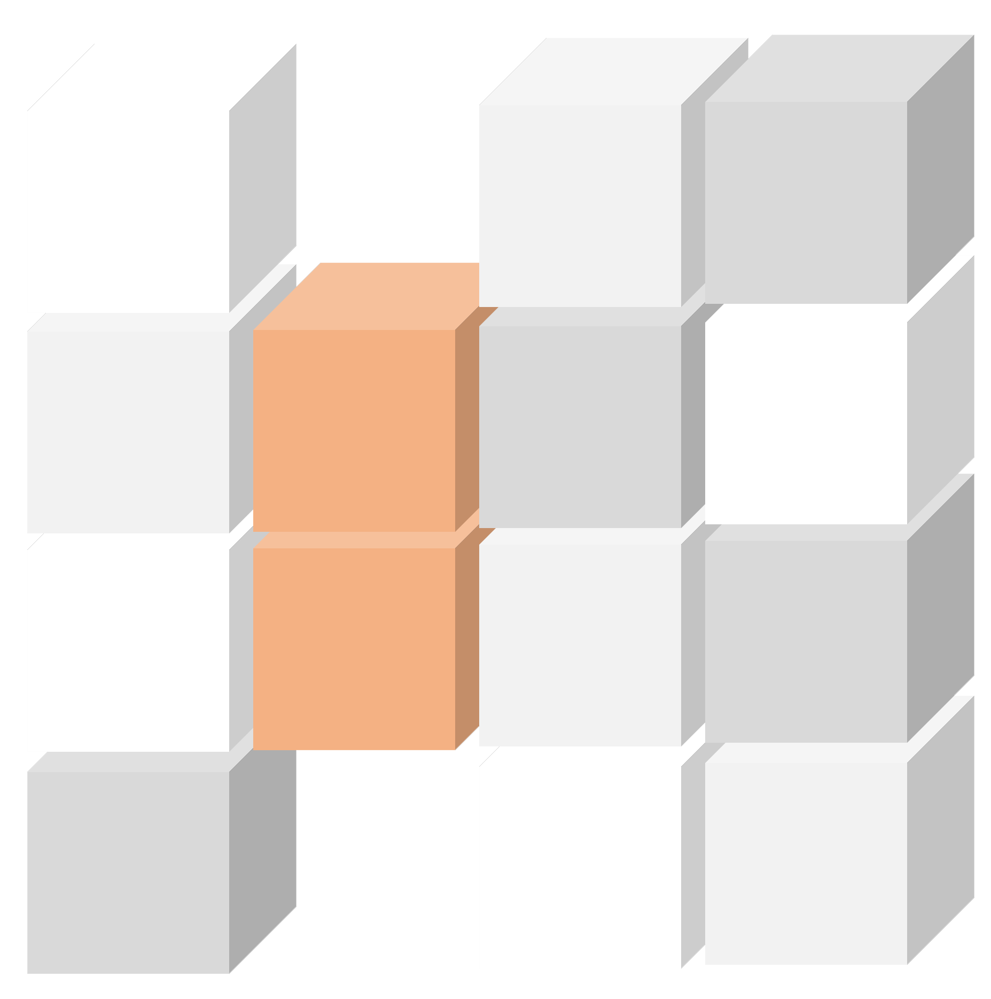
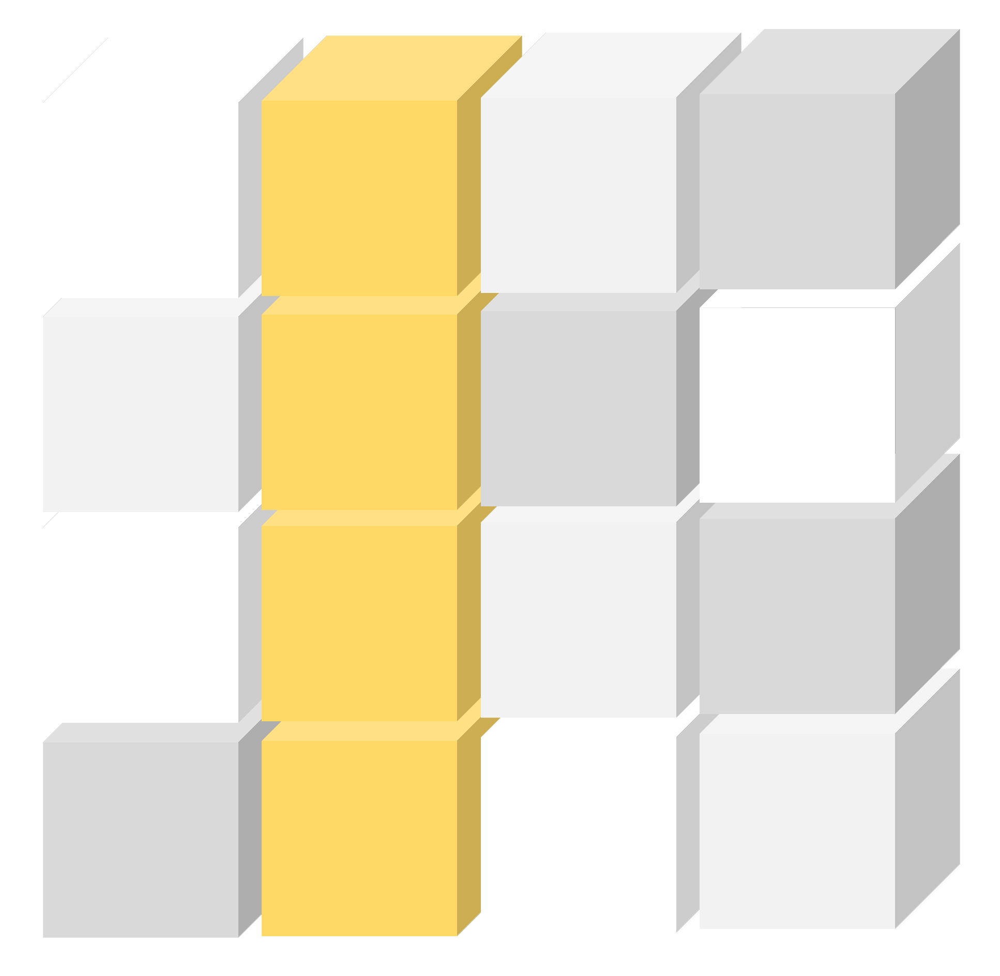
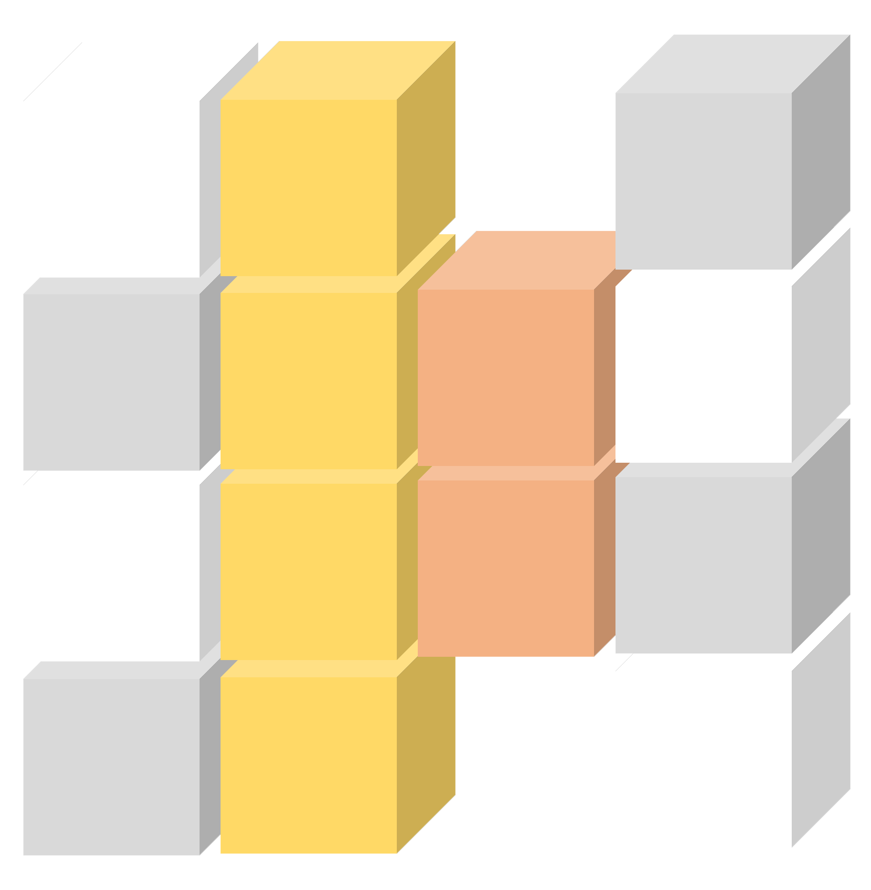

{% extends "base.html" %}
{% import 'bootstrap/form.html' as wtf %}

{% block styles %}
    {{ super() }}
    <style> 
        .paneltext {
          padding: 50px;
          text-align: center;
          background-color: #e5eecc;
          border: solid 1px #c3c3c3;
          display: none;
        }
        #inputSection {
            text-align: center;
            padding: 13px 33px;
            width: 196px;
            background: #FFFFFF;
            border: 2.5px solid #FEE599;
            box-sizing: border-box;
            top: -30px;
            position: absolute;
            margin-left: 1rem;

        }
        #inputsec {
            border: 2.5px solid #FEE599;
            margin-top: 3rem;
            position: relative;
            margin-bottom: 5rem;
        }

        .form-body {
            padding: 3rem 1rem;
        }

        .btn-primary {
            color: #fff;
            background-color: #FFC000;
            border-color: #FFC000;
        }

        .btn-primary:hover {
            color: #fff;
            background-color: #ce9a00;
            border-color: #ce9a00;
        }
        
    </style>
{% endblock %}

{% block content %}
<div class="media">
    {% if module_name == "Indel module" %}
    
    {% elif module_name == "Conservation block module" %}
    
    {% else %}
    
    {% endif %}
    
    <div class="media-body">
        <h1 style="margin-top: 4rem;">{{ module_name }}<br></h1>
    </div>
</div>
<div class ='container-fluid' id="inputsec">
    <h5 id='inputSection'>Input section</h5>
    <div class="form-body">
        {{ wtf.render_form(form, id="seqForm") }}
        <input class="btn btn-primary btn-md" id="submit" name="submit" form="seqForm" type="submit" value="FIRE!">
    </div>
    {% if error_messages %}
    <div class="modal fade" id="exampleModal" tabindex="-1" role="dialog" aria-labelledby="exampleModalLabel" aria-hidden="true">
        <div class="modal-dialog" role="document">
            <div class="modal-content">
                <div class="modal-header">
                    <h5 class="modal-title" id="exampleModalLabel">Error found</h5>
                    <button type="button" class="close" data-dismiss="modal" aria-label="Close">
                        <span aria-hidden="true">&times;</span>
                    </button>
                </div>
                <div class="modal-body">
                {% for oneMessage in error_messages %}
                    {{ oneMessage }}<br>
                {% endfor %}
                </div>
                <div class="modal-footer">
                    <button type="button" class="btn btn-secondary" data-dismiss="modal">Go back</button>
                    {% if not fatal %} 
                    <button type="submit" id="submitanyway" class="btn btn-primary" form="seqForm">Submit anyway</button>
                    {% endif %}
                </div>
            </div>
        </div>
    </div>
    {% endif %}

</div>
{% endblock %}

{% block scripts %}
    {{ super() }}
    <script src="/static/seqSubmitFunction.js"></script>
{% endblock %}